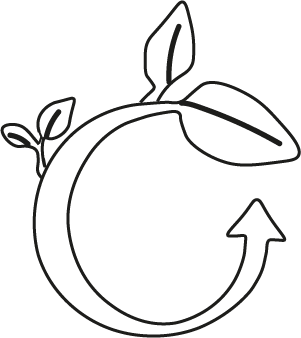

Over de KiloStore
Welkom bij KiloStore, dé plek voor vintage kleding van hoge kwaliteit tegen betaalbare prijzen. De winkels zijn
te vinden in verschillende delen van Amsterdam.
Bij de KiloStore zijn ze gepassioneerd voor vintage kleding en geloven zij dat iedereen de kans moet hebben om
hoogwaardige stukken te dragen zonder de bank te breken. Dat is waarom zij zich concentreren op het aanbieden
van
vintage kleding voor een betaalde kilo prijs
zo kunnen klanten een breed scala aan kledingstukken vinden tegen betaalbare prijzen
Hoogwaardig Kwaliteit
De KiloStore biedt een verscheidenheid aan vintage kleding uit verschillende tijdperken, waaronder de jaren
’60,
’70, en ’80. Ons assortiment omvat onder andere denim, leren jassen, jurken, rokken, blouses en T-shirts.
Deze halen zij uit verschillende delen van de wereld zoals: Parijs, Tokyo, Los Angeles en Berlijn.
Ze zijn erg trots op dat ze alleen kleding van hoge kwaliteit aanbieden,
en elk kledingstuk wordt zorgvuldig geselecteerd en gewogen om ervoor te zorgen dat klanten de beste kwaliteit
krijgen.

Duurzaamheid voor de KiloStore

Bij Kilostore vinden ze duurzaamheid belangrijk. Door het aanbieden van vintage kleding,
verminderen zij de impact op het milieu door het verminderen van de productie van nieuwe kleding.
Zij willen klanten aanmoedigen om bewust te zijn van hun aankopen en de voordelen van het kopen van vintage
kleding te ontdekken.
Weigh to Pay
Waarschijnlijk zegt de naam het al , maar in de KiloStore betaal je niet voor het het merk/item zelf, maar voor het gewicht van de item.
Zo kan de klant zo veel kleding eigenlijk pakken en allen betalen voor het gewicht dat die gene heeft.
Dit heeft als voordeel dat ook de duurdere merken evenveel kosten als de wat goedkopere merken.